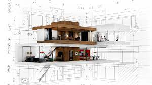
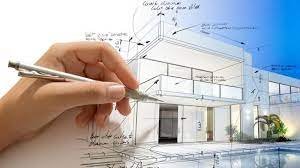

DEFINICIÓN
La arquitectura es una disciplina que abarca el diseño y la planificación de espacios físicos, estructuras y edificios. Se trata de una forma de arte y ciencia que se enfoca en crear ambientes habitables, funcionales y estéticamente agradables para las personas.
La arquitectura no se limita solo a la construcción de edificios, sino que también abarca la planificación urbana, el diseño de paisajes, el interiorismo y la consideración de aspectos culturales, sociales, económicos y medioambientales en la creación de espacios.

En resumen, la arquitectura implica la concepción, el diseño, la organización y la construcción de estructuras y espacios que satisfagan las necesidades humanas y se integren de manera armoniosa en su entorno, teniendo en cuenta aspectos funcionales, estéticos y prácticos. Los arquitectos son los profesionales que llevan a cabo esta tarea, y su trabajo es fundamental para dar forma al entorno construido en el que vivimos y trabajamos.
